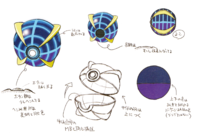
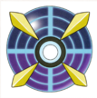

Inventos de la fundacion
Inventos de la fundacion
En la fundación, Pokémon y humanos viven en completa armonía y en libertad. Se infunde la idea de que los Pokémon tienen derechos; estos seres están mejor en libertad, deben ser cuidados y respetados. A Samina, su presidenta, le molesta pensar que los entrenadores capturan muchos Pokémon para encerrarlos y dejarlos abandonados en el PC, y se nota que ha inculcado a sus trabajadores que los Pokémon no son objetos, pues a ella no le gusta nada verles hacerse daño en combates Pokémon. Debido a esto, demandó la creación del domo de la fundación, un espacio de seguridad para los Pokémon en el que no tengan que sufrir por el trato humano.
Debido al problema de los Ultraentes y lo peligrosos que pueden llegar a ser en ciertos casos, la fundación optó por la creación de un dispositivo de contención con el más alto índice de efectividad, denominado como Ente-ball.
 Su funcionamiento no difiere mucho al de las Pokébolas comunes, ya que sigue el mismo principio: la captura de los especímenes. Sin embargo, gracias a los estudios de los Ultraumbrales y del Ultraespacio, nuestros científicos lograron que su efectividad solo se vea afectada por los Ultraentes, para minimizar los daños hacia los Pokémon cercanos.